소음진동기사(구) (2014-03-02 기출문제)
1과목: 소음진동개론
1. 고유음향 임피던스가 각각 Z1, Z2인 매질의 경계면에 수직으로 입사하는 음파의 투과율은?
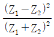
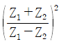
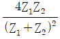
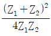
(정답률: 알수없음)

2. 섭씨 55도 사막지방 공기 중에서의 음속은?
- 약 322m/s
- 약 344m/s
- 약 364m/s
- 약 389m/s
(정답률: 알수없음)
3. 주파수 15Hz, 진동속도 파형의 전 진폭이 0.004m/s인 정현 진동의 진동 가속레벨은?
- 68dB
- 63dB
- 59dB
- 57dB
(정답률: 알수없음)
4. 중심주파수가 500Hz일 때, 3/1 옥타브밴드 분석기의 밴드폭(bω)은?
- 116 Hz
- 232 Hz
- 354 Hz
- 708 Hz
(정답률: 알수없음)
5. 무지향성 자유공간에 있는 음향출력이 3W인 작은 선음원으로부터 125m 떨어진 곳에서의 음압레벨은?
- 88dB
- 92dB
- 96dB
- 100dB
(정답률: 알수없음)
6. 점음원의 출력이 8배가 되고, 측정점과 음원과의 거리가 4배가 되면 음압레벨은 어떻게 변하겠는가?
- 3 dB 증가
- 6 dB 증가
- 3 dB 감소
- 6 dB 감소
(정답률: 알수없음)
7. 항공기 소음을 소음계의 D특성으로 측정한 값이 97dB(D)이다. 감각소음도(Perceived Noise Level)는 대략 몇 PN-dB인가?
- 104
- 116
- 132
- 154
(정답률: 알수없음)
8. 다음 중 상온에서의 음속이 일반적으로 가장 느린 것은?
- 물
- 철
- 나무
- 유리
(정답률: 알수없음)
9. 단진자의 길이가 0.5m일 때 그 주기(초)는?
- 1.24
- 1.42
- 1.69
- 1.94
(정답률: 알수없음)
10. 점음원과 선음원(무한장)이 있다. 각 음원으로부터 10m 떨어진 거리에서의 음압레벨이 100dB이라고 할 때, 1m 떨어진 위치에서의 각각의 음압레벨은? (단, 점음원-선음원 순서이다.)
- 120dB-110dB
- 110dB-120dB
- 130dB-115dB
- 115dB-130dB
(정답률: 알수없음)
11. 음의 세기(강도)에 관한 다음 설명 중 거리가 먼 것은?
- 음의 세기는 입자속도에 비례한다.
- 음의 세기는 음압의 2승에 비례한다.
- 음의 세기는 음향임피던스에 반비례한다.
- 음의 세기는 전파속도의 2승에 반비례한다.
(정답률: 알수없음)
12. 75 phon의 소리는 55phon의 소리에 빌해 몇 배 크게 들리는가?
- 2배
- 4배
- 8배
- 16배
(정답률: 알수없음)
13. 다음 중 음압의 단위에 해당하지 않는 것은?
- μbar
- W/m2
- dyne/m2
- N/m2
(정답률: 알수없음)
14. 다음 중 인체감각에 대한 주파수별 보정값으로 틀린 것은? (단, 수평진동일 경우는 수평진동이 1~2Hz 기준)
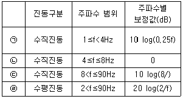
- ㉠
- ㉡
- ㉢
- ㉣
(정답률: 알수없음)
15. 다음 소음의 “시끄러움(Noisiness)"에 관한 설명 중 틀린 것은?
- 배경소음과 주소음의 음압도의 차가 클수록 시끄럽다.
- 소음도가 높을수록 시끄럽다.
- 충격성이 강할수록 시끄럽다.
- 저주파 성분이 많을수록 시끄럽다.
(정답률: 알수없음)
16. 다음은 기상조건에서 공기흡음에 의해 일어나는 감쇠치에 관한 설명이다. ()안에 알맞은 것은? (단, 바람은 무시하고, 기온은 20℃이다.)
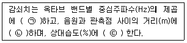
- ㉠ 비례, ㉡ 비례, ㉢ 반비례
- ㉠ 반비례, ㉡ 비례, ㉢ 비례
- ㉠ 비례, ㉡ 반비례, ㉢ 반비례
- ㉠ 반비례, ㉡ 비례, ㉢ 반비례
(정답률: 알수없음)
17. 청력에 관한 설명으로 가장 거리가 먼 것은?
- 사람의 목소리는 10~100hZ, 회화의 명료도는 100~300hZ, 회화의 이해를 위해서는 300~500Hz의 주파수 범위는 각각 갖는다.
- 음의 대소(큰 소리, 작은소리)는 음파의 진폭의 크기에 따른다.
- 청력손실은 정상청력인의 최소가청지와 피검자의 최소가청치와의 비를 dB로 나타낸 것이다.
- 일반적으로 4분법에 의한 청력손실이 옥타브밴드 중심주파수 500~2,000Hz 범위에서 25dB이상이면 난청이라 한다.
(정답률: 알수없음)
18. 인간이 느낄 수 있는 진동 가속도의 범위로 가장 알맞은 것은?
- 0.01~0.1 Gal
- 0.1~1 Gal
- 0.1~100 Gal
- 1~1,000 Gal
(정답률: 알수없음)
19. 사람의 외이도 길이는 3.5cm라 할 때, 25℃ 공기 중에서의 공명주파수는?
- 25Hz
- 50Hz
- 2,474Hz
- 4,949Hz
(정답률: 알수없음)
20. 등감각곡선(Equal Perceived Acceleration Contour)에 관한 설명으로 옳지 않은 것은?
- 일반적으로 수직 보정된 레벨을 많이 사용하며 그 단위는 dB(V)이다.
- 수직진동은 4~8Hz 범위에서 가장 민감하다.
- 등감각곡선에 기초하여 정해진 보정회로를 통한 레벨을 진동레벨이라 한다.
- 수직보정곡선의 주파수 대역이 4≤f≤8Hz 일 때 보정치의 물리량은
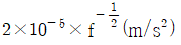
이다.
(정답률: 알수없음)
2과목: 소음방지기술
21. 소음 대책의 순서로 가장 적합한 것은?
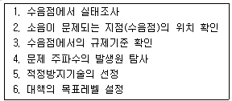
- 1→2→3→4→5→7→6
- 2→1→3→7→4→5→6
- 4→1→2→3→7→6→5
- 1→2→3→4→7→5→6
(정답률: 알수없음)
22. 처음 목적으로 사용하는 재료의 처음성능을 표시하는 방법으로 가장 거리가 먼 것은?
- 음압레벨차
- 투과율
- 음향투과손실
- 감쇠량
(정답률: 알수없음)
23. 방음벽 설계 시 유의점으로 가장 거리가 먼 것은?
- 음원의 지향성이 수음축 방향으로 클 때에는 벽에 의한 감쇠치가 계산치보다 작게 된다.
- 벽의 투과손실은 회절감쇠치보다 적어도 5dB 이상 크게 하는 것이 바람직하다.
- 벽의 길이는 점은원일 때 벽높이의 5배 이상으로 하는 것이 바람직하다.
- 방음벽에 의한 실용적인 삽입손실치의 한계는 점은원일 때 25dB, 선음원일 때 21dB 정도이며, 실제는 5~15dB 정도이다.
(정답률: 알수없음)
24. 저음역에서 중공 이중벽의 공명주파수를 계산할 때, 중공 이중벽의 공기층의 두께는 0.30m이고, 두 벽의 면밀도가 각각 m1=100kg/m2, m2=150kg/m2, 공기층의 두께 d=0.30m인 경우 실용식으로 계산한 저음역의 공명주파수(frl)는?
- 44Hz
- 37Hz
- 22Hz
- 14Hz
(정답률: 알수없음)
25. 흡음덕트에 관한 설명으로 가장 거리가 먼 것은?
- 흠음덕트의 소음 감소는 덕트의 담면적, 흡음재의 흡음성능 및 두께, 설치면적 등에 의해 주로 영향을 받는다.
- 광대역 주파수 성분을 갖는 소음을 줄일 수 있다.
- 고주파 영역보다는 저주파 영역에서 좋은 감음 성능을 보인다.
- 공기조화 시스템에 사용되는 덕트에서 휀(Fan)이나 그 밖의 소음에 의해 발생하는 소음을 줄이기 위해 사용된다.
(정답률: 알수없음)
26. 높이 10m, 폭 10m, 길이 10m인 방의 잔향 시간(sec)은? (단, 실내 평균흡음률은 0.2이다.)
- 0.35
- 1.34
- 15
- 140
(정답률: 알수없음)
27. 사무실을 1,000Hz에서 40dB의 투과손실을 갖는 칸막이벽으로 분리하고자 한다. 또한 칸막이벽에 동일 주파수에서 20dB의 투과손실을 갖는 유리창을 벽면적의 10% 크기로 설치하고자 한다. 1,000Hz에서 총합 투과손실은?
- 30dB
- 35dB
- 40dB
- 45dB
(정답률: 알수없음)
28. 겨울철에 빌딩의 창문 또는 출입문의 틈새에서 강한 소음이 발생한다. 소음발생의 주요인은?
- 실내외의 온도차로 인하여 음속차가 발생하기 때문에
- 실내외의 밀도차에 의한 연돌효과 때문에
- 겨울철이 되면 주관적인 소음도가 높아지기 때문에
- 실외의 온도강하로 인하여 음속이 빨라지기 때문에
(정답률: 알수없음)
29. 판진동에 의한 흡음주파수가 100Hz이다. 판과 벽체와의 최적 공기층이 32mm일 때 이 판의 면밀도(kg/m2)는? (단, 음속은 340m/s, 공기밀도는 1.23kg/m3이다.)
- 11.3
- 21.5
- 31.3
- 41.5
(정답률: 알수없음)
30. 그림과 같은 방음벽에 직접음의 회절 감쇠치가 12dB(A), 반사음의 회절 감쇠치가 15dB(A), 투ㅠ과 손실치가 16dB(A)이다. 직접음과 반사음을 모두 고려한 이 방음벽의 회절 감쇠치는?
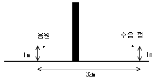
- 9.2dB(A)
- 10.2dB(A)
- 11.2dB(A)
- 12.5dB(A)
(정답률: 알수없음)
31. 가로, 세로, 높이가 각각 6m×5m×3m인 방의 흡음률이 바닥 0.1, 천장 0.2, 벽 0.15 이다. 이 방의 천장 및 벽을 흡음처리하여 그 흡음률을 각각 0.73, 0.62로 개선할 때의 실내소음 저감량은?
- 약 2.5㏈
- 약 5㏈
- 약 8㏈
- 약 15㏈
(정답률: 알수없음)
32. 기어 잇수가 20, 회전수 7,200rpm일 때 기어의 기본음 주파수(f)는?
- 1,200㎐
- 2,400㎐
- 4,800㎐
- 7,200㎐
(정답률: 알수없음)
33. 정격유속(Rated Flow) 조건하에서 소음원에 소음기를 부착하기 전과 후의 공간상의 어떤 특정 이치에서 측정한 음압레벨의 차와 그 측정위치로 정의되는 소음기의 성능표시는?
- 삽입손실치
- 동적삽입손실치
- 감음량
- 투과손실치
(정답률: 알수없음)
34. 방음벽 재료로 음향특성 및 구조강도 이외에 고려하여야 하는 사항으로 가장 거리가 먼 것은?
- 방음벽에서 사용되는 모든 재료는 인체에 유해한 물질을 함유하지 않아야 한다.
- 방음벽의 모든 도장은 주변환경과 어울리도록 구분이 명확한 광택을 사용하는 것이 좋다.
- 방음판은 하단부에 배수공(Drain Hole) 등을 설치하여 배수가 잘 되어야 한다.
- 방음벽은 20년 이상 내구성이 보장되는 재료를 사용하여야 한다.
(정답률: 알수없음)
35. 가로 20m, 세로 20m, 높이 4m 인 방중앙 바닥에 PWL 90㏈인 무지향성 점음원이 놓여 있다. 이 음원으로부터 10m 지점에서의 음향에너지 밀도(Wㆍsec/m3)는? (단, 실내의 평균 흡음률은 0.1, 음속은 340m/s로 한다.)
- 10-7
- 10-s
- 10-9
- 10-10
(정답률: 알수없음)
36. 소음제어를 위한 자재류의 특성으로 옳지 않은 것은?
- 흡음재 : 상대적으로 경량이며, 잔향음 에너지를 저감시킨다.
- 차음재 : 상대적으로 고밀도로서 음의 투과율을 저감시킨다.
- 제진재 : 상대적으로 큰 내부손실을 가진 신축성이 있는 자재로, 진동으로 판넬이 떨려 발생하는 음에너지를 저감시킨다.
- 차진재 : 탄성패드나 금속스프링으로서 구조적 진동을 증가시켜 진동에너지를 저감시킨다.
(정답률: 알수없음)
37. 아래 그림과 같이 방음 울타리의 정점(O)와 음원(S), 수음점(R)이 일직선상에 있다고 할 때, 프레즈널수(Fresnel Number) N은? (문제 오류로 복원중입니다. 그림파일이 없습니다. 정확한 내용을 아시는 분께서는 오류신고를 통하여 내용 작성 부탁 드립니다. 정답은 1번입니다.)
- 0
- 4
- 6
- 10
(정답률: 알수없음)
38. 날개수 6개의 송풍기가 90,000 cycles/hr로 운전되고 있을 때 기본음 주파수는?
- 1,500㎐
- 500㎐
- 250㎐
- 150㎐
(정답률: 알수없음)
39. 25℃ 공기 중에서 길이가 55cm인 양단개구관의 공명기본음 부파수(㎐)는?
- 157㎐
- 206㎐
- 302㎐
- 315㎐
(정답률: 알수없음)
40. 실내벽면에 대한 흡음대책 전후의 흠음력이 각각 500m2, 1,500m2일 때 실내소음 저감량(㏈)은? (단, 평균흡음률은 0.3 미만이라 가정)
- 약 10㏈
- 약 5㏈
- 약 3㏈
- 약 1㏈
(정답률: 알수없음)
3과목: 소음진동 공정시험 기준
41. 발파진동 측정기기의 사용 및 조작에 대한 일반사항으로 옳지 않은 것은?
- 진동레벨기록기의 기록속도 등은 진동레벨계의 동특성에 부응하게 조작한다.
- 진동레벨계의 출력단자와 진동레벨기록기의 입력단자를 연결한 후 전원과 기기의 동작을 점검하고 매회 교정을 실시하여야 한다.
- 진동레벨계만으로 측정할 경우에는 최고 진동레벨이 고정(Hold)되어서는 안된다.
- 진동레벨계의 레벨레인지 변환기는 측정지점의 진동레벨을 예비조사한 후 적절하게 고정시켜야 한다.
(정답률: 알수없음)
42. 항공기소음 측정에 관한 사항으로 옳지 않은 것은?
- 원칙적으로 연속 7일간 측정한다.
- 소음계의 청감보정회로는 A특성으로 하여 측정한다.
- 소음계의 동특성은 빠름(Fast)으로 하여 측정한다.
- 측정자는 비행경로에 수직하게 위치하여야 한다.
(정답률: 알수없음)
43. 항공기 소음한도 측정방법에서 항공기소음의 WECPNL 산출시 비행횟수 는 몇 시부터 몇 시까지의 비행횟수를 나타내는가?
- 07시~19시
- 08시~20시
- 09시~21시
- 10시~22시
(정답률: 알수없음)
44. 다음 중 측정소음도 및 배경소음도의 측정을 필요로 하는 기준은?
- 환경기준 및 배출허용기준
- 배출허용기준 및 동일건물 내 사업장소음 규제기준
- 환경기준 및 생활소음 규제기준
- 환경기준 및 항공기 소음한도기준
(정답률: 알수없음)
45. 배출허용기준 중 진동측정시 디지털 진동자동분석계를 사용하여 측정진동레벨로 산정하는 기준에 관한 설명이다. ( ) 안에 알맞은 것은?
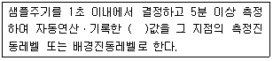
- 90% 범위의 상단치의 L10
- 90% 범위의 하단치의 L10
- 80% 범위의 상단치의 L10
- 80% 범위의 하단치의 L10
(정답률: 알수없음)
46. 철도진동 측정자료 평가표 서식에 반드시 기재되어야하는 사항으로 거리가 먼 것은?
- 레일길이
- 승차인원(명/대)
- 열차통행량(대/hr)
- 평균 열차속도(km/hr)
(정답률: 알수없음)
47. 다음은 규제기준 중 발파소음 측정평가에 관한 사항이다. ( ) 안에 알맞은 것은?
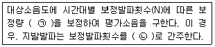
- ㉠ +10 logN:N＞1, ㉡ 1회
- ㉠ +10 logN:N＞1, ㉡ 2회
- ㉠ +20 logN:N＞1, ㉡ 1회
- ㉠ +20 logN:N＞1, ㉡ 2회
(정답률: 알수없음)
48. 발파진동 평가를 위한 보정 시 시간대별 보정발파횟수(N)는 작업일지 등을 참조하여 발파진동 측정당일의 발파진동 중 진동레벨이 얼마 이상인 횟수(N)를 말하는가?
- 50㏈(V) 이상
- 55㏈(V) 이상
- 60㏈(V) 이상
- 130㏈(V) 이상
(정답률: 알수없음)
49. 다음은 간이소음계의 사용기준에 관한 설명이다. ( ) 안에 알맞은 것은?
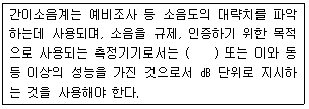
- KS C IEC 61272-1에 정한 클래스 2의 소음계
- KS C IEC 61672-2에 정한 클래스 2의 소음계
- KS C IEC 61692-1에 정한 클래스 2의 소음계
- KS C IEC 62696-2에 정한 클래스 2의 소음계
(정답률: 알수없음)
50. 압전형 진동픽업의 특징에 관한 설명으로 옳지 않은 것은? (단, 동전형 픽업과 비교)
- 온도, 습도 등 환경조건의 영향을 받는다.
- 소형 경량이며, 중고주파대역(10㎑ 이하)의 가속도 측정에 적합하다.
- 고유진동수가 낮고(보통 10~20㎐), 강도가 안정적이다.
- 픽업의 출력임피던스가 크다.
(정답률: 알수없음)
51. 1일 동안의 평균 최고소음도가 101㏈(A)이고, 1일간 항공기의 등가통과횟수가 5⑤회 일 때 1일 단위의 WECPNL(㏈)은?
- 약 94
- 약 98
- 약 101
- 약 1⑤
(정답률: 알수없음)
52. 진동픽엄의 횡감도는 규정주파수에서 수감축 감도에 대한 차이가 얼마이상 이어야 하는가? (단, 연직특성)
- 1㏈ 이상
- 10㏈ 이상
- 15㏈ 이상
- 20㏈ 이상
(정답률: 알수없음)
53. 발파소음측정에 관한 설명으로 옳지 않은 것은?
- 측정점은 피해가 예상되는 자의 부지경계선 중 소음도가 높을 것으로 예상되는 지점에서 지면 위 0.5~1.0m 높이로 한다.
- 측정소음도는 발파소음이 지속되는 기간 동안에 측정하여야 한다.
- 소음도 기록기를 사용할 때에는 기록지사으이 지시치의 최고치를 측정소음도로 한다.
- 최고소음 고정용 소음계를 사용할 때에는 당해 지시치를 측정소음도로 한다.
(정답률: 알수없음)
54. 측정소음도가 58.6㏈(A), 배경소음도가 51.2㏈(A)일 경우 대상소음도를 구하기 위한 보정치(㏈(A)) 절대값으로 옳은 것은?
- 0.9
- 1.4
- 1.6
- 1.9
(정답률: 알수없음)
55. 다음은 소음도 기록기 또는 소음계만을 사용하여 측정할 경우의 등가소음도 계산방법이다. ( ) 안에 알맞은 것은?
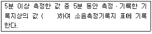
- 5초 간격으로 50회 판독
- 5초 간격으로 60회 판독
- 6초 간격으로 50회 판독
- 6초 간격으로 60회 판독
(정답률: 알수없음)
56. 표준진동 발생기(Calibrator)의 발생진동의 오차는 얼마이내이어야 하는가?
- ±0.1㏈ 이내
- ±0.5㏈ 이내
- ±1㏈ 이내
- ±10㏈ 이내
(정답률: 알수없음)
57. 다음 그림과 같은 일반적인 진동레벨계 기본 구성에서 6에 해당하는 것은?
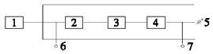
- Attenuator
- Calibration Network Calibrator
- Weighting Networks
- Data Recorder
(정답률: 알수없음)
58. 도로교통진동한도 측정방법에 관한 사항으로 가장 거리가 먼 것은?
- 요일별로 진동 변동이 큰 요일(월요일부터 일요일사이)에 당해지역의 도로교통진동을 측정하여야 한다.
- 진동픽업의 연결선은 잡음 등을 방지하기 위하여 지표면에 일직선으로 설치한다.
- 시간대별로 진동피해가 예상되는 시간대를 포함하여 2개 이상의 측정지점수를 선정하여 4시간 이상 간격으로 2회 이상 측정하여 산술평균한 값을 측정진동레벨로 한다.
- 측정진동레벨 산출시 디지털 진동자동분석계를 사용할 경우에는 샘플주기를 1초 이내에서 결정하고 5분 이상 측정한다.
(정답률: 알수없음)
59. 소음계의 성능기준으로 옳은 것은?
- 지시계기의 눈금오차는 0.5㏈ 이내이어야 한다.
- 레벨레인지 변환기가 있는 기기에 있어서 레벨레인지 변환기의 전환오차가 1㏈ 이내이어야 한다.
- 측정가능 주파수 범위는 31.5㎑~8㎒ 이상이어야 한다.
- 측정가능 소음도 범위는 0~100㏈ 이상이어야 한다.
(정답률: 알수없음)
60. 소음의 환경기준 측정방법 중 도로변지역의 범위(기준)로 옳은 것은?
- 2차선의 경우 도로단으로부터 30m 이내의 지역
- 4차선의 경우 도로단으로부터 100m 이내의 지역
- 자동차전용도로의 경우 도로단으로부터 100m 이내의 지역
- 고속도로의 경우 도로단으로부터 150m 이내의 지역
(정답률: 알수없음)
4과목: 진동방지기술
61. 고유진동수에 대한 강제진동수의 비가 2일 때, 진동전달율 는? (단, 감쇠는 없다.)
- 1/3
- 1/4
- 1/8
- 1/15
(정답률: 알수없음)
62. X1=4cos 80t, X2=5 cos 80t인 2개의 진동이 동시에 일어날 때, 이 합성진동의 최대진폭은 얼마인가? (단, 진폭의 단위는 cm로 한다.(t는 시간변수))
- 5.0cm
- 5.8cm
- 6.4cm
- 7.0cm
(정답률: 알수없음)
63. 다음 중 진동량을 표시할 때 사용되는 것으로 적합하지 않은 것은?
- 진동수
- 진동속도
- 진동변위
- 진동가속도
(정답률: 알수없음)
64. 다음 중 가진력을 저감시키는 방법으로 적합하지 않은 것은?
- 터보형 고속회전 압축기는 왕복운동 압축기로 교체한다.
- 기계에서 발생하는 가진력은 지향성이 있으므로 기계의 설치 방향을 바꾼다.
- 단조기는 단압프레스로 교테한다.
- 자동차바퀴의 연편을 부착하는 등 회전기계의 회전부불평형은 정밀실험을 통해 평형을 유지한다.
(정답률: 알수없음)
65. 아래 그림 스프링 질량계의 경우 등가스프링 정수는? (문제 오류로 복원중입니다. 그림파일이 없습니다. 정확한 내용을 아시는 분께서는 오류신고를 통하여 내용 작성 부탁 드립니다. 정답은 4번입니다.)
- k1+k2
- k1k2
- (k1+k2)/k1k2
- k1/k2/(k1+k2)
(정답률: 알수없음)
66. 아래 그림 진동계의 고유 진동수는?
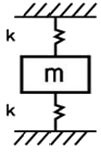
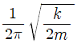
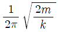
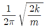
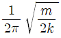
(정답률: 알수없음)
67. 자동차진동 중 자체 고주파진동에 과한 설명으로 가장 거리가 먼 것은?
- 차량이 불균일한 노면위를 정상속도로 주행하는 상태에서 엔진이 부정연소하여 후륜구동 차량에서 격렬한 횡진동을 수반하는 것을 말한다.
- 진동은 약 90~150㎐ 정도의 주파수 범위에서 발생되며, 직력 4기통 엔진을 탑재한 차량에서 심각하게 발생한다.
- 대책으로 엔진의 가진력을 줄이기 위해서는 미쓰비시, 란체스터 형과 같은 카운터샤프트를 적용하여 2차모멘트를 저감시킨다.
- 동흡진기를 적용하여 배기계와 구동계의 진동모드를 제어하는 것도 효과적이다.
(정답률: 알수없음)
68. 금속자체에서 진동 흡수력을 갖는 제진합금의 분류 중 흑연주철, Al-Zn합금(단, 40~78%의 Zn을 포함)으로 이루어진 것은?
- 강자성형
- 쌍전형
- 전위형
- 복합형
(정답률: 알수없음)
69. P-P치(진진폭)를 D, 속도진폭을 V라고 할 때, 가속도진폭 A를 구하는 식으로 옳은 것은?
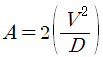
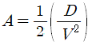
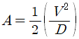
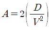
(정답률: 알수없음)
70. 감쇠 강제진동에서 고유각진동수가 2rad/sec이고, 감쇠비가 0.5인 경우에 최대 진폭이 생기는 조화 가진력의 각진동수(rad/sec)는?
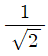
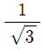
- √2
- √3
(정답률: 알수없음)
71. 기계를 스프링으로 지지하여 고체음을 저하시켜 소음을 줄이고자 한다. 강제진동수가 40㎐인 경우 스프링의 정적수축량은? (단, 감쇠비=0, 진동전달율=0.3)
- 약 0.4cm
- 약 0.07cm
- 약 0.10cm
- 약 0.13cm
(정답률: 알수없음)
72. 기계를 스프링으로 지지할 때 가진 주파수가 70㎐인 기계를 정적변위 4mm인 스프링을 쓰면 진동전달율은 얼마로 되는가?
- 0.0116
- 0.0128
- 0.0178
- 0.0251
(정답률: 알수없음)
73. 스프링에 0.4kg의 질량을 매달았을 때 스프링이 0.2m 만큼 늘어났다. 이 평형점으로부터 0.2m 더 잡아 늘린 다음 놓아주었을 때 최대가속도는 얼마인가? (단, 중력가속도는 g=9.8m/s2이다.)
- 49m/s2
- 9.8m/s2
- 7m/s2
- 1.4m/s2
(정답률: 알수없음)
74. 다음 중 전달력은 항상 외력보다 작기 때문에 차진이 유효한 영역으로 가장 적합한 것은?
- f/fn이 1이어야 한다.
- f/fn이 √2이어야 한다.
- f/fn이 √2보다 작아야 한다.
- f/fn이 √2보다 커야 한다.
(정답률: 알수없음)
75. 감쇠자유진동을 하는 진동계에서 진폭이 3사이클 후에 50% 감소 되었다면, 이 계의 대수감쇠율은?
- 0.231
- 0.347
- 0.366
- 0.549
(정답률: 알수없음)
76. 다음 ( ) 안에 들어갈 말로 옳은 것은?
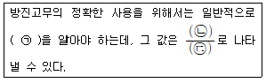
- ㉠ 정적배율, ㉡ 동적 스프링정수, ㉢ 정적 스프링 정수
- ㉠ 동적배율, ㉡ 정적 스프링정수, ㉢ 동적 스프링 정수
- ㉠ 동적배율, ㉡ 동적 스프링정수, ㉢ 정적 스프링 정수
- ㉠ 정적배율, ㉡ 정적 스프링정수, ㉢ 동적 스프링 정수
(정답률: 알수없음)
77. 금속스프링의 단점을 보완하기 위한 대책으로 가장 거리가 먼 것은?
- Rocking Motion을 억제하기 위해서는 스프링의 정적수축량이 일정한 것을 쓴다.
- Rocking Motion을 억제하기 위해서는 기계 무게의 1~2배의 가대를 부착하고 계의 중심을 낮게 한다.
- 낮은 감쇠비로 일어나는 고주파 진동의 전달은 스프링과 직렬로 고무패드를 끼워 차단할 수 있다.
- 스프링의 감쇠비가 적을 때는 스프링과 직렬로 Damper를 넣는다.
(정답률: 알수없음)
78. 진동방대책을 발생원, 전파경로, 수진측 대책으로 분류할 때 다음 중 발생원 대책으로 거리가 먼 것은?
- 기계의 가진력에 의한 전달을 감소하기 위해 방진스프링을 사용한다.
- 저진동 기계로 교체한다.
- 장비에 운전하중을 고려하여 부가중량을 가한 관성베이스를 적용한다.
- 수진점 근처에 방진구를 파고, 모래충진을 통해 지반개량을 한다.
(정답률: 알수없음)
79. 지반진동 차단 구조물로서 대표적인 방진구에 있어서 다음 중 가장 중요한 설계 인자는?
- 트랜치의 깊이
- 트랜치의 폭
- 트랜치의 형상
- 트랜치의 위치
(정답률: 알수없음)
80. 무게 120N인 기계를 스프링 정수 30N/cm인 방진고무로 지지하고자 한다. 방진고무 4개로 4점 지지할 경우 방진고무의 정적수축량은? (단, 감쇠비는 무시)
- 7.5cm
- 4cm
- 2cm
- 1cm
(정답률: 알수없음)
5과목: 소음진동 관계 법규
81. 소음진동관리법규상 소음방지시설이 아닌 것은?
- 방음외피시설
- 방음지지시설
- 방음림 및 방음언적
- 흡음장치 및 시설
(정답률: 알수없음)
82. 소음진동관리법규상 인증시험대행기간이 검사장비 및 기술인력의 변경이 있는 경우 얼마기간 내에 환경부장관에게 알려야 하는가?
- 변경된 날부터 7일 이내에
- 변경된 날부터 15일 이내에
- 변경된 날부터 30일 이내에
- 변경된 날부터 3개월 이내에
(정답률: 알수없음)
83. 소음진동관리법규상“미고시지역”의 야간시간대(22:00 ~06:00) 도로교통 소음한도기준 Leq ㏈(A)은? (단, 대상지역은 교통소음진동의 영향을 받은 지역이며, 대상지역의 구분은 국토의 계획 및 이용에 관한 법률에 따른다.)
- 58
- 60
- 63
- 65
(정답률: 알수없음)
84. 소음진동관리법상 규제기준을 초과하여 생활소음ㆍ진동을 발생시킨 사업자에게 작업시간의 조정 등을 명령하였으나, 이를 위반한 경우 벌칙기준으로 옳은 것은?
- 3년 이하의 징역 또는 1천 500만원 이하의 벌금에 처한다.
- 1년 이하의 징역 또는 1천만원 이하의 벌금에 처한다.
- 6개월 이하의 징역 또는 500만원 이하의 벌금에 처한다.
- 300만원 이하의 과태료를 부과한다.
(정답률: 알수없음)
85. 소음진동관리법규상 배출시설 및 방지시설과 관련된 개별기준 중 배출시설 변경신고 대상자가 이를 이행하지 아니한 경우 4차 행정처분기준으로 가장 적합한 것은?
- 조업정지 10일
- 허가 취소
- 조업정지 5일
- 경고
(정답률: 알수없음)
86. 소음진동관리법규상 소음발생건설기계의 종류 중 공기압축기의 기준으로 옳은 것은?
- 공기토출양이 분당 2.83세제곱미터 이상의 이동식인 것으로 한정한다.
- 공기토출양이 시간당 2.83세제곱미터 이상의 이동식인 것으로 한정한다.
- 공기토출양이 분당 2.83세제곱미터 이상의 고정식인 것으로 한정한다.
- 공기토출양이 시간당 2.83세제곱미터 이상의 고정식인 것으로 한정한다.
(정답률: 알수없음)
87. 소음진동관리법규상 생활소음ㆍ진동 규제기준에 관한 사항으로 옳지 않은 것은?
- 공사장의 진동 규제기준은 주간의 경우 특정공사 사전시고 대상 기계ㆍ장비를 사용하는 작업시간이 1일 2시간 이하일 때는 +10㏈을 규제기준치에 보정한다.
- 공사장의 소음규제기준은 주간의 경우 특정공사 사전신고 대상 기계ㆍ장비를 사용하는 작업시간이 3시간 초과 6시간 이하일 때는 +5㏈을 규제기준치에 보정한다.
- 발파소음의 경우 주간에만 규제기준치(광산의 경우 사업장 규제기준)에 +5㏈을 보정한다.
- 공사장의 규제기준 중 주거지역은 공휴일에만 -5㏈을 규제기준치에 보정한다.
(정답률: 알수없음)
88. 소음진동관리법규상 특정공사의 사전신고 대상 기계ㆍ장비의 종류에 해당하지 않는 것은?
- 압입식 항타항발기
- 브레이커(휴대용을 포함한다.)
- 다짐기계
- 발전기
(정답률: 알수없음)
89. 다음은 소음진동관리법에 명시된 사항이다. ( )안에 가장 적합한 것은?
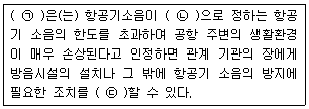
- ㉠ 시ㆍ도지사, ㉡ 환경부령, ㉢ 요청
- ㉠ 시ㆍ도지사, ㉡ 환경부령, ㉢ 명령
- ㉠ 환경부장관, ㉡ 대통령령, ㉢ 요청
- ㉠ 환경부장관, ㉡ 대통령령, ㉢ 명령
(정답률: 알수없음)
90. 소음진동관리법규상 대형 승용자동차의 운행자동차 경적소음(㏈(C))의 허용기준은? (단, 2006년 1월 이일 이후에 제작되는 자동차기준)
- 102 이하
- 110 이하
- 112 이하
- 115 이하
(정답률: 알수없음)
91. 소음진동관리법규상 환경기술인이 환경보전협회 등에서 실시하는 교육을 받아야 하는 교육기간기준은? (단, 정보통신매체를 이용하여 원경교육을 실시하는 경우 등을 제외)
- 3일 이내
- 5일 이내
- 7일 이내
- 10일 이내
(정답률: 알수없음)
92. 소음진동관리법규상 특별시장 등이 운행차에 점검결과 소음기를 떼어버린 경우로서 환경부령으로 정하는 바에 따라 자동차 소유자에게 개선명령을 할 때, 개선에 필요한 기간기준으로 옳은 것은?
- 개선명령일부터 5일
- 개선명령일부터 7일
- 개선명령일부터 10일
- 개선명령일부터 14일
(정답률: 알수없음)
93. 소음진동관리법규상 환경부장관이 측정망설치계획을 고시할 때 포함되어야 할 사항으로 가장 거리가 먼 것은?
- 측정망의 배치도
- 측정소에 설치될 소음계의 규격
- 측정소를 설치할 토지의 위치
- 측정소를 설치할 건축물의 면적
(정답률: 알수없음)
94. 소음진동관리법에서 규정하는 교통기관에 해당하지 않는 것은?
- 기차
- 항공기
- 전차
- 철도
(정답률: 알수없음)
95. 소음진동관리법규상 자동차의 사용정지명령을 받은 자동차를 사용정지기간 중에 사용하는 경우 벌칙기준으로 옳은 것은?
- 3년 이상의 징역 또는 1천500만원 이하의 벌금에 처한다.
- 1년 이하의 징역 또는 1천만원 이하의 벌금에 처한다.
- 6개월 이하의 징역 또는 500만원 이하의 벌금에 처한다.
- 300만원 이하의 벌금에 처한다.
(정답률: 알수없음)
96. 소음진동관리법규상 환경기술인을 두어야 할 사업장 및 그 자격기준에서 소음진동기사 2급(산업기사) 이상의 기술자격 소지자를 두어야 하는 대상 사업장은 총동력 합계를 기준으로 할 때 몇 마력 이상인가?
- 2,000마력
- 3,000마력
- 4,000마력
- 5,000마력
(정답률: 알수없음)
97. 소음진동관리법규상 시도지사 등이 환경부장관에게 상시 측정한 소음진동자료를 제출해야 할 시기기준으로 옳은 것은?
- 매분기 다음 달 말일까지
- 매문기 다음 달 15일까지
- 매월 말일까지
- 매월 15일까지
(정답률: 알수없음)
98. 소음진동관리법규상 배출시설 및 방지시설 등과 관련된 행정처분기준 중 환경기술인을 임명해야 함에도 불구하고 임명하지 아니한 경우에 1차 행정처분기준은?
- 허가취소
- 조업정지 5일
- 환경기술인의 선임명령
- 경고
(정답률: 알수없음)
99. 소음진동관리법규상 농림지역의 낮시간대(06:00~ 22:00) 공장진동 배출허용기준으로 옳은 것은? (단, 대상지역 구분은 국토의 계획 및 이용에 관한 법률에 따름)
- 50㏈(V) 이하
- 55㏈(V) 이하
- 60㏈(V) 이하
- 65㏈(V) 이하
(정답률: 알수없음)
100. 소음진동관리법규상 진동배출시설기준으로 옳지 않은 것은? (단, 동력을 사용하는 시설 및 기계ㆍ기구로 한정한다.)
- 20마력 이상의 분쇄기
- 50마력 이상의 성형기(압출ㆍ사출을 포함한다)
- 30마력 이상의 단조기
- 30마력 이상의 목재가공기계
(정답률: 알수없음)